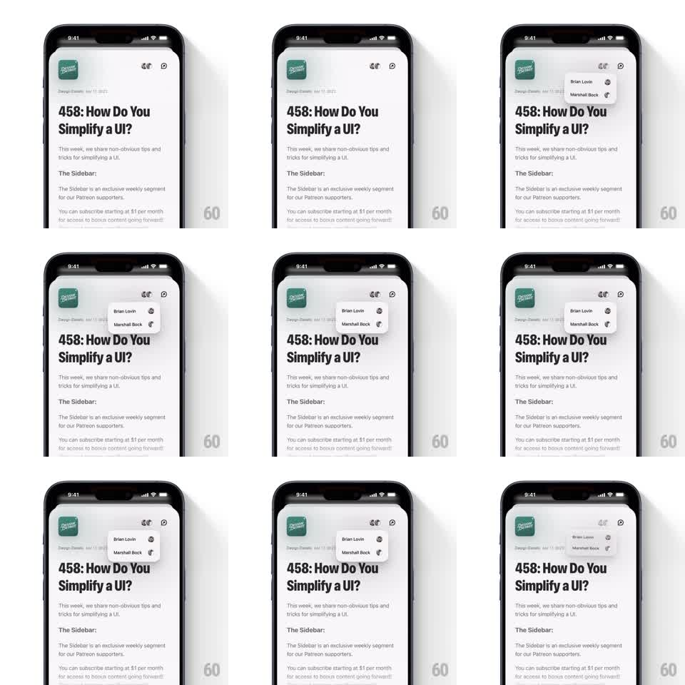

Media
Frame-by-frame

Rebuild this animation 1:1: Queue's dropdown wiggle - tapping the people icon pops a small menu that springs out of its anchor with a playful overshoot wiggle, then snaps back away on dismiss.

Rebuild this animation 1:1: Queue's dropdown wiggle - tapping the people icon pops a small menu that springs out of its anchor with a playful overshoot wiggle, then snaps back away on dismiss. ## Integration Integration: stack-agnostic spec - springs given as stiffness/damping, timed motions as duration + curve; map every value to your framework and animation library of choice. ## Scene Episode page: top-right icon cluster (people + download). Tapping people opens a compact menu listing rows (host names with avatars) anchored just under the icon. ## Motion spec Pattern: spring pop with rotational wiggle, ~500ms in. - Menu scales in from its top-right anchor point: scale 0.6 -> 1 with a spring (~450/14) so it overshoots to ~1.06 and settles. - Riding the spring, the whole menu wiggles: rotate 0 -> +2.5deg -> -1.5deg -> 0 across the overshoot (~350ms), pivot at the anchor. - Menu opacity hits 1 within the first 100ms so the shape is readable through the wiggle. - Rows inside do not stagger - the menu moves as one object. - Dismiss (tap outside or icon): scale 1 -> 0.7 and fade (150ms, ease-in), no wiggle on the way out. ## Calibration - Pivot stays pinned to the anchor corner the entire time; a center pivot makes the menu look unmoored. - One wiggle cycle. Two cycles is a jellyfish, not a menu. ## Reduced motion Fade + 8px slide down (150ms); no rotation. ## Don't miss - The page behind does not dim - this is a lightweight popover, not a modal. - Wiggle amplitude is small enough that menu text stays readable at every frame.